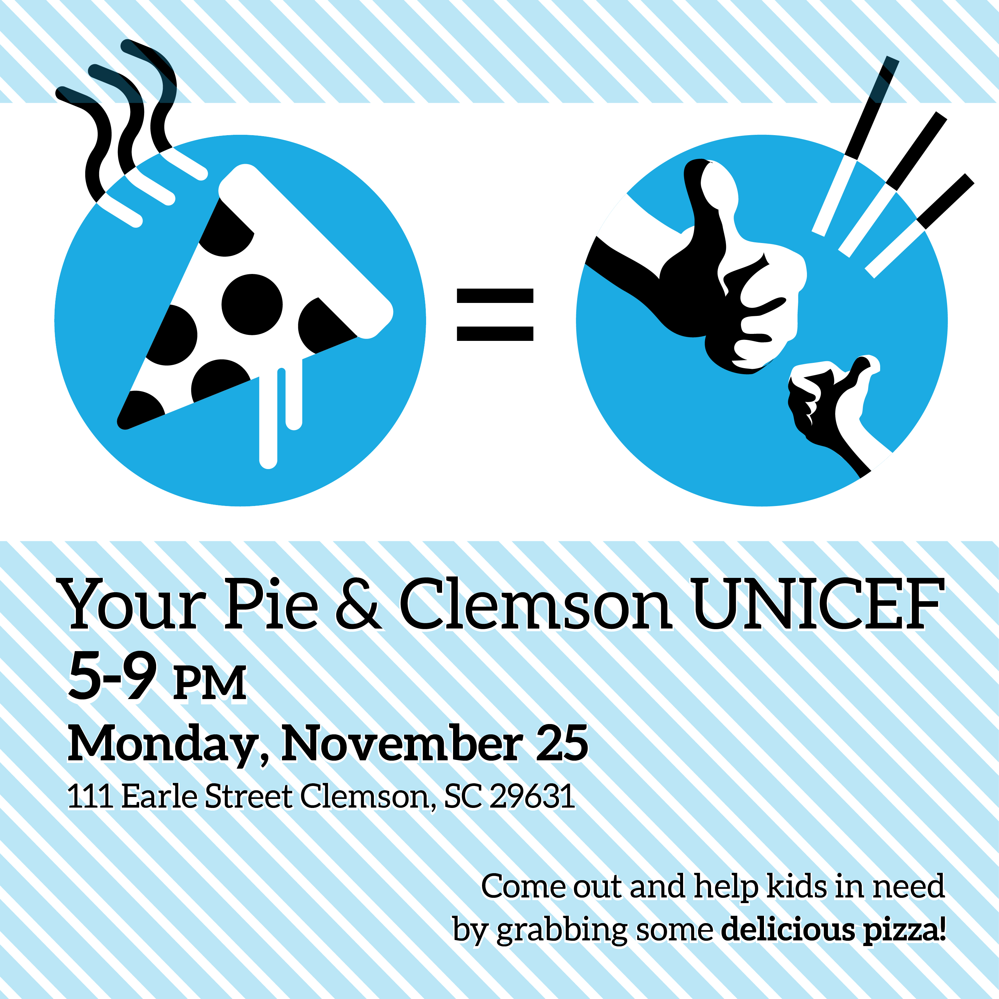
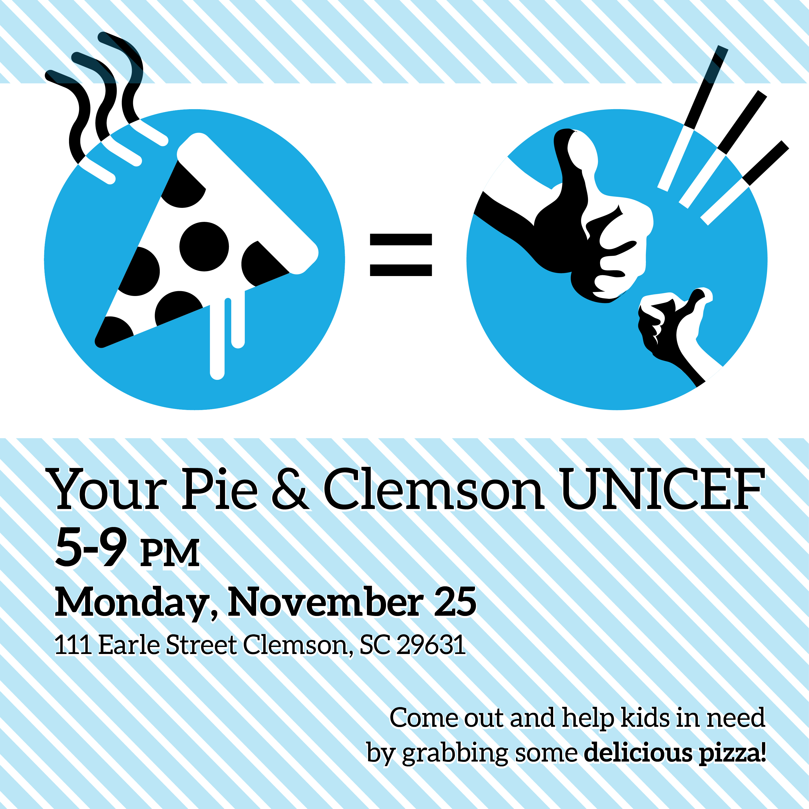
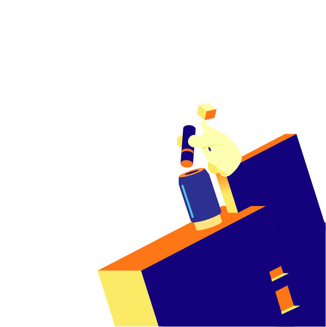
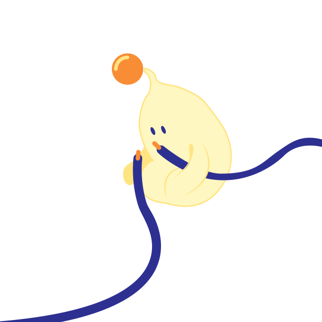

CUhackit

My role as web designer for Clemson's premiere hackathon, CUhackit, necessitates an understanding of UX design as well as the skills to translate those ideas into mockups. I used Adobe Illustrator with Adobe XD and Zeplin to create designs for the webdev team that were easily translatable into code, and worked off of the illustrations of Daniel Ball.
For next year's website, I plan on having a much more involved hand in the coding of the website, because my experience last year convinced me that it might be helpful to know a little front end and understand what their process looks like. As is evident in some other projects in this portfolio, that interest has developed into the beginnings of a practice, and I am planning on having more self-coded deliverables in my portfolio moving forward.
 